Rob Lefferts, Program Manager, Site Server
Robert Carter, MSDN Online Web Workshop Writer
Microsoft Corporation
June 8, 1998
 Download the sample ASP files (zipped, 7K).
Download the sample ASP files (zipped, 7K).
Contents
Introduction
About the Site Vocabulary
Tutorials
Create and Configure a Membership Server
Create a Visual InterDev Project
Collect User Information
View the Registration Page
Target Personalized Content
Troubleshooting Guide
Conclusion
Return to Site Server 3.0 Overview page
Introduction
With the release of Microsoft® Site Server 3.0, Microsoft is introducing a suite of tools that ease the task of personalizing visits by specific users to an Internet or intranet site. Broadly speaking, personalization is the process of tailoring the information visitors encounter when perusing a site. The customized information displayed reflects interests the user has revealed in past visits. Sites can explicitly gather profiles of visitors by requesting (or, less elegantly, requiring) them to fill out forms, by tracking the areas of the site they tend to visit, or even recording their choices within pages using advanced features such as hidden forms. Based on the profiles, the site dynamically provides additional information, navigation choices, discounts, or whatever material site authors feel may tickle that visitor's fancy.
This article will first describe the concept of a site vocabulary as the central organizing principle for collecting, displaying, and disseminating information on a site. We'll then cover several processes that enable a simple personalization scheme based on a sample site vocabulary.
Throughout the article, we'll try to provide concrete, easy-to-follow directions. We'll be covering only a subset of the personalization methods possible. We'll also be making assumptions about how a site is configured. (So if you are unable to duplicate our examples, let us know.) This tutorial's examples are compatible with the other samples included with Site Server.
All the examples we present are available either as part of the Site Server documentation or this download. If you want to faithfully recreate the steps we outline, you'll need to install Visual InterDev™ and the FrontPage® Server Extensions. If you do try to work your way all the way through, set aside a day, or at least a couple of hours per section. There are a lot of concepts and procedures to work through, and sniffing around a little in each module will pay off later.
 Back to top
Back to top
About the Site Vocabulary
A site vocabulary is a set of key terms and functions around which a site is organized. It can be a set of practices, sections, divisions, topics, pages, and capabilities used throughout the site. The site vocabulary is a classification system that Site Server relies on to perform specific tasks or guide visitors to specific information or services. Figure 1 displays the site vocabulary included with Site Server:
![[PER3482B 9585 bytes ]](pers01.gif)
Figure 1. Sample site vocabulary
What's interesting about this vocabulary is the range of views it affords. One section of the vocabulary is clearly about the company itself: general information, employment information, and the products and services it offers. Another section of the vocabulary describes the characteristics of the users that access the site: their experience level, age, gender, job classification, and member type. The classification possibilities are unlimited.
Personalization and membership services use a site vocabulary to customize content linking characteristics of the site visitor (which adhere to a particular user information profile) to characteristics of the site. For example, we could create a user category called "employee." When a visitor to the site falls in the category of employee, the Web server could send that visitor special content about workplace events. This prevents non-employees from viewing material that they shouldn't see for security reasons and/or don't interest them.
The linking possibilities are unlimited as well. The key is to use these classification and linking capabilities to guide site visitors as efficiently as possible to the information they want or that you want to provide them.
This tutorial does not show you how to modify the site vocabulary. For more information on setting up a site vocabulary, see Getting the Most Out of Site Server Knowledge Manager.
Incidentally, personalization and membership features are but one application of the site vocabulary. Other Site Server services that rely on it include the Analysis, Content Manager, Search, Push, and Knowledge Manager toolsets. For more information on each, load the Site Server documentation by clicking Start, Programs, Microsoft Site Server, and then Site Server Documentation, or mosey on over to the Site Server Web site  .
.
Back to top
Tutorials
We'll cover the following procedures for creating, configuring, and implementing personalization on our sample membership server. We recommend that you print out the Microsoft Word version of this article and use it as a checklist. Each procedure builds on capabilities that are set up in the previous procedure. To configure your own server in the same manner, perform them in this sequence:
Create and Configure a Membership Server:
Create a New Membership Server
Create and Configure Two New Web Servers
Map the Web Server to the Membership Instance
Configure the Sites
Create and Manage Membership Users and Groups
Add FrontPage Server Extensions to Your Sites
Create a Visual InterDev Project
Collect User Information:
Add an Attribute to the Membership Directory Manager
Insert Design-Time Controls into the Registration page
Add a cn Attribute
Add a Password Attribute
Add a Mail Attribute
Add a PersonalProduct Attribute
View the Registration Page
Target Personalized Content:
A Simple Example: Adding AUO Script
Create and Target a Content Source
Create a Targeting Rule
Insert the Rule into a Web Page
Create and Configure a Membership Server
The first set of tasks we'll cover is building a membership server. Membership servers house the site vocabulary and a host of controls and features that facilitate tracking site visitors and their preferences, and map that information to different capabilities of the site. A membership server runs parallel to the Web site, gathering information from visitors at specified points and in turn feeding the site with personalized information. It can also control access to areas of the site if it has different membership levels.
Site Server offers two versions of the same administration tool to create and configure membership servers. The first is based on the Microsoft Management Console. The second uses an HTML front-end. While the HTML version has a smaller set of features, it's more straightforward to use. This tutorial uses both to give you a feel for their respective interfaces and features.
Create a New Membership Server
Create the Web directory.
- Using Windows NT® 4.0 Explorer (click the Start button, select Programs, and then select Windows NT Explorer), create a new directory in the Inetpub folder. We named our directory "personalroot" to make it easy to remember that it contains files for the personalization tutorial.
Create a new membership instance.
- From the Start menu, select Programs, Microsoft Site Server, and then Site Server Service Administrator (MMC).
- Once the management console appears, open the Personalization and Membership folder, right-click the name of the server, and select New followed by Membership Server Instance. (Note Once any task is outlined in these processes, continue by clicking the Next button, unless instructed otherwise.)
- Select the Complete Configuration radio button. Then select Create a new Membership Directory, followed by Membership Authentication.
- Type "PersonalDemo" when prompted for a membership directory name, and choose a password. For future reference (and we mean it),
Write the password here:
- Choose Access Database as the database type, and accept the default filename Site Server generates. The Wizard will then display a box asking for an IP address and Port #.
- Accept [All Unassigned] for the default IP Address. If this is a fresh system installation, the port number selected by Site Server will most likely be 1003. We will refer to this as the Membership Instance IP Port, and you will need to enter the port number to access it.
Write the Personal Demo Membership Instance IP Port number here:
- You will then be prompted to enter the name of an SMTP Server. The Wizard may supply a default name for you, which should be acceptable (especially if it provides an SMTP server name that matches your machine name). You can specify the name of any SMTP server available on your network, or use the SMTP server installed with the Windows NT 4.0 Option Pack by default. To use this SMTP server, enter "localhost" or the name of your server.
- After following these steps (and clicking the Finish button), you should soon see Membership Instance #x appear in the Site Server Administration Console. If this is your first time working with Site Server, you will see Membership Instance #2. We renamed it "PersonalDemo Membership Server"; we advise renaming it for your site.
- If you right-click the PersonalDemo Membership Server and select Properties, you should see a dialog box similar to this:
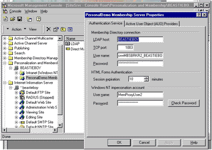
Figure 2. New membership instance with Properties dialog box
Back to top
Create and Configure Two New Web Servers
Now that we've created a membership server, we need to create the site people will visit. In this procedure, we'll create two sites. The Viewing site will be the site visitors see when they are surfing. The Editing site where authors edit and build content before posting it to the Viewing site. We'll configure a few settings differently to enable the Editing site to work with Visual InterDev™.
Create a new Web server.
- From the Management Console, open the Internet Information Server folder and right-click the name of your server (in our case BEASTIEBOY). (Note You can perform the same steps by highlighting the BEASTIEBOY server and clicking the Action button (with the down-pointing arrow) just below the menu bar in the console.)
- Select New and follow the arrow to Web Site. You will start the New Web Site Wizard.
- In the first dialog box of the wizard, enter "Viewing Site" as the description of your Web Server. Accept the default [All Unassigned] IP Address the Wizard provides.
- Type "5295" for the TCP port number. (If 5295 is not accepted, it is already in use. Keep trying different numbers until you find one that is acceptable.)
Write down the Viewing Site's port number here:
- Enter the address of the directory (the home directory path) you just created in the box provided. To be doubly safe, use the Browse button, because future steps we perform will reference this address, which must exactly match the actual Windows NT directory address.
- Accept the default access options the Wizard displays: Allow Read Access and Allow Script Access. (Allow Execute Access would be appropriate if we were setting up a site that activated DLL or EXE applications, Allow Write Access would give an anonymous user the ability to change or add content, and Allow Directory Browsing enables a feature of Internet Information Server [IIS] that displays a list of files in a directory when a user does not provide a complete URL.)
- After clicking Finish, you will see a new entry labeled Viewing Site (stopped) appear under the Administration Web site entry.
- Repeat the steps above for another site we will call the Editing site. We suggest using port number 5296 for the Editing site.
Write down the Editing site's port number here:
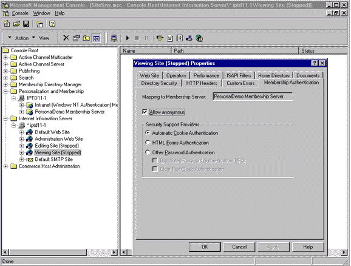
Figure 3. Management Console showing new Viewing site, Editing site, and membership instance
Back to top
Map the Web Server to the Membership Instance
Mapping the Editing and Viewing sites to the membership instance establishes connections between the servers so we can implement personalization. As discussed in the section on site vocabulary, we're enabling the new Web site(s) to access the existing schema of the site, and apply the existing user categories or create our own.
Map the Viewing site to the PersonalDemo membership server.
- From the Site Server Management Console, open the Internet Information Server folder (double-click it or single-click the "+" that appears to its left). Select the Viewing Site icon and right-click it.
- In the dialog box that appears, select Task and point to what is probably the only task listed, Membership Server Mapping. From the dialog box drop-down list that appears, select PersonalDemo Membership Server.
- Repeat this process for the Editing site. Depending on the speed of your machine, the process might take a few seconds.
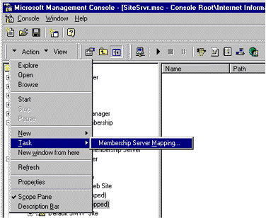
Figure 4. Activating Membership server mapping via the Action button
Back to top
Configure the Sites
Before we get to play with the sample Web pages, we need to configure them for two types of authentication. Think of authentication as a bouncer checking your ID before you can enter a club.
Set the authentication method for your sites.
- From the Site Server Management Console, open the Internet Information Server folder. Locate and right-click the Viewing site icon and select Properties. A dialog box will appear. (The default tab that appears should show some of the properties you entered earlier for the site, such as port number and host directory.)
- Select the Membership Authentication tab, which was created when you mapped the site to the new membership server.
- Make sure the Allow Anonymous box is checked, and select the HTML Forms Authentication radio button. Click OK. The Membership Authentication dialog box should look something like Figure 5.
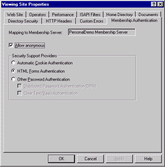
Figure 5. Viewing site with Automatic Cookie Authentication setting activated
- Repeat the process for the Editing site, but this time select the Other Password Authentication radio button, and check the box next to Clear Text/Basic Authentication. Finally, start both Web sites by right-clicking the icon for each in the IIS folder and selecting Start.
Back to top
Create and Manage Membership Users and Groups
Site Server enables you to control who can access specific membership servers. In our case, we're going to create a group called Developers, and a user called SiteEditor, that will be able to access the PersonalDemo membership server (and the sites it maps to).
We're adding this step because later on, when we want to build a project in Visual InterDev that will create and edit the pages of the Editing site, we will be asked to register as a valid user. If, at that point, we haven't already created a set of approved users for our PersonalDemo, we will have to log on as a global administrator, which is a bit of overkill (assuming you even have that level of access). Besides, it's simply good administrative practice to create user groups that are tied to particular sites and privileges.
Start the HTML-based Site Server Service Administration tool.
- Select Start, Programs, Microsoft Site Server, Administration, and then select Site Server Service Admin (HTML). Internet Explorer 4.0 (or your default browser) should start and display a page that looks like
Figure 6.
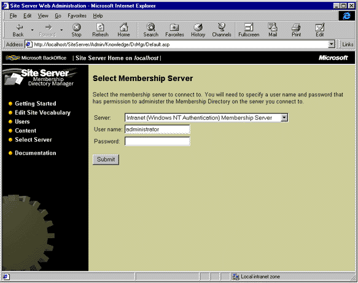
Figure 6. Site Server Service Administration (HTML) default page
- If Internet Explorer gives you an error message, and you use a proxy server to access the Internet, you may need to configure it to display local pages. In Internet Explorer, select Internet Options from the View menu. Click the Connection tab. In the Proxy server section of the Connection tab, make sure the check box next to Bypass proxy server for local (intranet) access is checked.
Create a new User and Group.
- On the page that appears, select the Membership Directory Manager section, and select the server you want to monkey with from the drop-down list (which is, of course, the PersonalDemo membership server). Also enter your User name ("Administrator") and password (the same password you entered when you created the server).
- A new page will appear. Select Users from the left pane of the page, and then select the User Management hotlink. A page appears like the one in Figure 7.
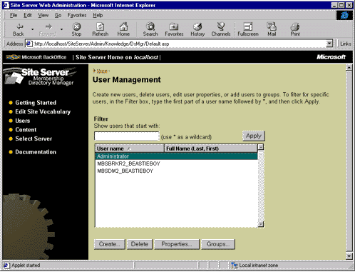
Figure 7. User Management screen of HTML-based Site Server Administration tool
- Click the Create button. You will be presented with an HTML form page. Fill out the form as much as you like, but make sure to fill out the User name, Password, and Verify password fields. (For User name, we chose SiteEditor.)
- Click the Submit button.
Write down the SiteEditor password here:
- Return to the Users home page by selecting Users in the left pane again.
- This time through, select the Group Management hyperlink. You will encounter a page similar to that for entering Users. Again select Create.
- Fill out the form for Group name (we chose "Developers") and, if you wish, a Description (for example, "Those who can post content to the PersonalDemo Editing Site,"). Then click the Members button.
- You will be sent to a page that lists all the members of the Developers group (presently nobody). Click the Add Users button at the bottom of the page to see a list of the users eligible to be added to your group. The SiteEditor user category you just created should appear in the list.
- Select SiteEditor and click the Submit button. You will be bounced back to the previous page, but now SiteEditor will appear as a member of Developers.
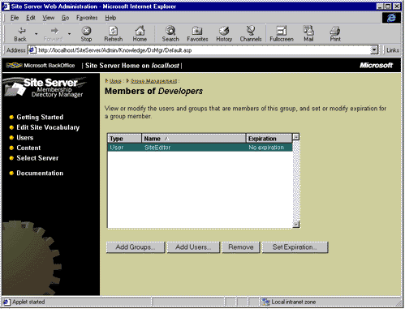
Figure 8. Developers group with SiteEditor User added
Verify your new group.
- To make sure your entries to the membership server have been reflected throughout the system, we'll use another tool in the Windows NT toolkit, the User Manager for Domains. From the Start menu, select Programs, Administrative Tools (Common), and User Manager for Domains. By default, it will start by loading the domain your machine is on, so it may take a while before you see anything (especially if your computer is on a large company network).
- When your domain finally loads, select the User tab on the Command menu and highlight Select Domain.
- In the dialog box that appears, type the name of your machine (it should load a lot more quickly than your entire network).
- In the lower pane of the User Manager for Domains dialog box, use the scrollbar to locate the group you just added. If you followed our naming convention, it should look something like Site_PersonalDemo_Developers, as in Figure 9.
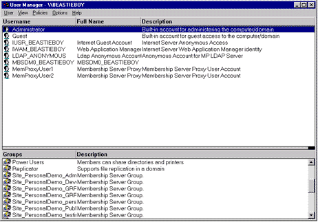
Figure 9. User Manager for Domains with recently added groups
If your groups don't appear immediately, that doesn't mean they weren't registered. Sometimes it takes a while for them to appear. If you want, get a cup of coffee, stretch your legs, come back again in a few minutes and try again. It's not critical, though. We point this out only as an error-checking mechanism.
Back to top
Add FrontPage Server Extensions to Your Sites
Now that we've got our servers up and running, pointing to content directories, and the access privileges set, we're going to add FrontPage Server Extensions, Microsoft's mechanism for publishing pages to Web sites.
The extensions are enable Visual InterDev and other applications to access and publish pages on Web servers. For example, with the extensions enabled, you can display pages on a server by simply copying files into a server's root folder.
Start the FrontPage Server Administrator.
- From the Start button on the taskbar, select Programs, Windows NT 4.0 Option Pack, Microsoft Internet Information Server, and, finally, FrontPage Server Administrator. A dialog box similar to the one in Figure 10 will appear.
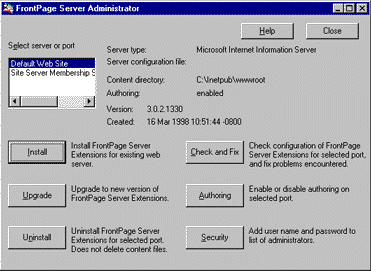
Figure 10. FrontPage Server Administrator dialog box
- Click the Install button. A dialog box will appear and ask what type of server to configure; select Microsoft Internet Information Server from the drop-down list.
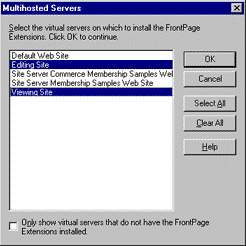
Figure 11. Selecting servers to apply FrontPage extensions
- Another dialog box will appear listing the sites available to configure. Select the Editing site and Viewing Site (using the CTRL key) and click OK. If you see, "This port already has a root Web. Click OK to upgrade to most recently installed FrontPage Server Extensions," click OK (as if you had another choice!).
- You may get a prompt asking you to provide a password, with your alias as a default name. Change the User name entry to "Administrator," and in the password box enter the password you chose when setting up the membership server. You should then see an "Install Completed Successfully" message.
- Click OK to return to the original dialog box.
If you are unable to install the FrontPage Server Extensions, and get an "Unable to open port" message, delete and reinstall the server, making doubly sure that the address you enter for the server exactly matches that in the Windows NT directory. This is the point of accuracy we talked about earlier, and we emphasize it because your humble narrator made this error.
Create additional administrator privileges.
- To complete the configuration process, select the Editing site entry in the box in the upper left of the window, and click the Security button.
- At the prompt, type "Site_PersonalDemo_Developers" (or whatever group you added using the Group Management tool of the Site Server Administration console) in the Name text box and click OK.
- After a few moments, you should see a message indicating that "Developers" has been added to administrators for the root Web. Close the FrontPage Server Administrator.
Congratulations. Your servers are now ready to have content posted to them.
Back to top
Create a Visual InterDev Project
Now that our servers are ready, we'll start a Visual InterDev project for editing their content and posting to them.
Set up a new Web project in Visual InterDev.
- From the Start button, select Programs, Microsoft Visual InterDev, and Visual InterDev.
- From the Visual InterDev default workspace, select New from the File menu. A dialog box appears.
- Select the Projects tab if it isn't selected by default. Select the Web Project Wizard, type "personalization" as the name of your new project, and click OK.
In Visual InterDev 6.0, immediately after it starts you'll be presented with a dialog box that asks you whether you'd like to create a New Web Project. Enter the name of your project ("personalization", as described above), and the wizard will pick up from there. The only other difference is the question asking which mode you'd like to work in (we used the default "Master" mode).
Identify the Editing site server.
- You will now be prompted to identify a specific server and port. Type in the appropriate server:port combination, which in our case is BEASTIEBOY:5296 (don't forget that we're setting up access to the Editing site server). You will get an error message stating that the server is not available. Don't panic. Try again. You should successfully access the server on the second try. Visual InterDev generates this message on the first attempt to access any server not on default port 80.
- If you continue running into trouble getting the server recognized, try using all caps in the name (technically, servers aren't supposed to be case-sensitive, but it worked for me), or even "localhost" as in "localhost:5296".
- If you've forgotten what your server settings are, go to the Management Console, right-click the Editing site icon, and select Properties; the Web Site tab will provide a description and port number information.
Create a new Web.
- You are then asked whether to create a new Web or map to an existing one.
- Select Create a new Web. Click Finish. If you are prompted to authenticate the site, you should log in as "SiteEditor," or whatever user you created that was part of the Developers group. For a password, use the one that you provided when creating the membership instance.
In Visual InterDev 6.0, you may be presented with a long physical address ending in "SiteEditor"; delete everything but "SiteEditor" from the text box and continue.
Add the sample tutorial files to your project.
- From the Project menu, select Add to Project, and then select Files.
- Use the File dialog box to navigate to the folder where you stored the files you downloaded earlier, and select all five project files (reg.asp, press.asp, userpref.asp, default.asp, and menubar.asp). You can use the SHIFT or CTRL keys to select multiple files at once, if you wish.
- Click OK, and they should be added to the list of project files in the left-hand pane.
In Visual InterDev 6.0, from the Project menu, select Add Web Item, and follow the arrow to Active Server Page. In the dialog box that appears, select the Existing tab and navigate to the folder where you stored our sample files. Select them all by holding down the CTRL key and clicking on each individually. Select Open.
Set access privileges for the pages.
- From the MMC version of the Site Server Administration tool, double-click the Viewing Site entry, and then do the same for the personalization (or whatever you named your Visual InterDev project) subfolder. Right-click the userpref.asp page and select Properties.
- Select the Membership Authentication tab again, as you did earlier. Set authentication to Allow Anonymous and Automatic Cookie Authentication.
- Repeat for the reg.asp and press.asp pages. Also repeat this process for the Editing site, but select Other Authentication and Clear Text/Basic Authentication as the preferred access methods.
At first, I confess to being a bit confused about all these different settings for the Editing site versus the Viewing site. The pages each site accesses are identical (reg.asp, userpref.asp, and so forth), but the servers they are being accessed from are used for different purposes by different audiences, and require different settings to function correctly. The Editing site is set up for people who will be adding content or editing files via Visual InterDev, which at present doesn't support HTML Forms authentication. So while both servers may request reg.asp, Editing site users ("Developers") are allowed to do so using Clear Text/Basic authentication, which is supported by Visual InterDev. Visitors accessing the Viewing site, who won't be posting content or editing files (other than submitting their personalization info) access reg.asp through Internet Explorer, which supports cookies. In any event, feel free to preview how the files look before we modify them: Select a file in the left pane of the Visual InterDev project, right-click, and then select Preview in Browser.
Back to top
Collect User Information
This section discusses one way of collecting information from site visitors that can then be used to provide some basic personalization features. This process breaks down into four mini-processes:
- Modify the Membership Directory Manager to recognize the information.
- Select and implement an information-collection scheme in your Web pages.
- Construct a set of rules to determine when and how to insert personalized information.
- Modify your Web pages to display the personalized information.
As you can see, these processes are neatly divided into back- and front-end processes, with the back end referring to the Site Server functions, and the front end our manipulation of Web pages using Visual InterDev.
Before we modify our sample pages, you might want to preview what happens when you visit them now (in short: not much).
Back to top
Add an Attribute to the Membership Directory Manager
Our personalization "scheme" is to display information about a product that a visitor to the site selects from a list of options when they register. So our first step in constructing the scheme is to create an attribute in our PersonalDemo server that will represent the visitor's selection.
Set the Membership Directory Administrator to the PersonalDemo server.
- From the Site Server Administration Console, right-click the Membership Directory Manager folder and select Properties.
- In the Directory tab of the Properties dialog, set the Port text box to the Membership Instance IP Port Number that you wrote down earlier. (If you didn't write it down, right-click the Personal Demo Membership Server icon, select Properties, and review the Authentication Service tab; your port listing should appear there.)
- Depending on the access level you have been assigned, a dialog box may appear asking you to log on. Simply click OK to log on anonymously.
Add a new attribute.
- Double-click the Membership Directory Manager folder, and then double-click the ou=Admin subfolder.
- Right-click the cn=Schema node, then select New and Attribute. The New Attribute Wizard will start.
- Type in "PersonalProduct" as the name of the attribute. Feel free to embellish the name of the attribute with a display name ("Personal Demo Products") and a description ("Products of interest to site visitors based on selection from list").
- The next dialog box presents a set of radio buttons. Because we'll be storing particular product names, select String.
Specify the string syntax constraints.
- Because this attribute is meant to store a value corresponding to a product the visitor selects, and the list of products available are already stored in the site vocabulary, select the Site Vocabulary radio button and click Select.
- In the Category Selection dialog box that appears (which shows your site's vocabulary), open the Root node, then Sample Site, and finally Products.
- Click OK.
- The string \SampleSite\Products should appear in the Category text box.
- Click OK and then Finish to register the attribute.
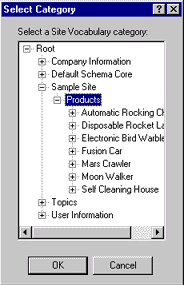
Figure 12. Sample site vocabulary schema
- To verify that your new attribute has been created, double-click cn=Schema in the Membership Directory Manager folder (which you were returned to after adding the attribute).
- Scroll down the right pane until you encounter your new entry, cn=PersonalProduct. Double-clicking it will produce a dialog box similar to the one in
Figure 13.
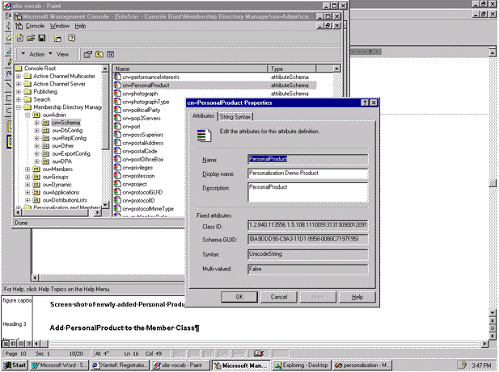
Figure 13. Screen shot of newly added PersonalProduct attribute
Add PersonalProduct to the member class.
- Double-click the cn=Schema node again from the Membership Directory Manager folder.
- In the right-hand pane, scroll down to the cn=Member object and double-click it.
- On the Class Attributes tab, push the Add button and, in the Add Attribute dialog box, scroll down to the PersonalProduct attribute.
- Click PersonalProduct and click OK. Click OK once more to finish.
Back to top
Insert Design-Time Controls into the Registration Page
If you previewed the reg.asp page earlier, you saw that although it talked about collecting information from you, there were no forms, check boxes, or anything for visitors to provide that information. We'll remedy that by inserting ActiveX® Design-time Controls directly into the page's HTML. (For more information on Design-time Controls, go to http://msdn.microsoft.com/workshop/components/dtctrl/dcsdk.asp ) If you still have your workspace in Visual InterDev open from earlier, fine. If not, start Visual InterDev, select Open Workspace from the Files menu, and select the Personalization project.
Insert the Membership.Header Design-time Control.
- Double-click the reg.asp page. The right pane in Visual InterDev should show the multi-colored HTML and ASP code of reg.asp. Scroll to this comment in the right pane:
<!--Insert Membership.Header DTC here -->
- Position the cursor underneath the comment. Right-click and select Insert ActiveX Control from the dialog box that appears.
- Select the Design-time tab and scroll down to the Membership and Personalization objects.
- Select the Membership Header Design-time Control and click OK.
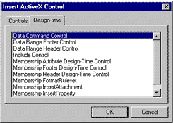
Figure 14. Pre-installed Design-time Controls dialog box
Configure the Membership.Header Design-time Control.
- When you select the Membership Header Design-time Control, the right pane will display a gray screen with a Membership Header icon, and a dialog box will offer two radio-button choices. Select Create a New User and ensure that it is unique.
- Click the Variables tab. Select Script ID. In the Value text box, change the o=microsoft value to o=PersonalDemo.
In Visual InterDev 6.0, place the DTC on the page by dragging it with the mouse from the Toolbox to the proper place on the page. Once on the page, select the DTC box with your mouse. The parameters to manipulate, if any, will appear in the Properties box in the lower right portion of the VID screen.
- The Value box should now contain cn=administrator, ou=members, o=PersonalDemo. It is very important that you set this value correctly. To double-check, return to the Site Server Management Console, select the Personalization and Membership folder, and open the PersonalDemo Membership Server (either by double-clicking on the entry or right-clicking on the "+". Right-click the LDAP item and select Properties. The Root Distinguished Name of the membership server is on the top of the Directory Properties tab; this is the value that you should enter in the Membership.Header Design-Time Control in place of "Microsoft."
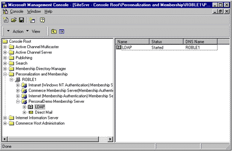
Figure 15. Locating the PersonalDemo LDAP server
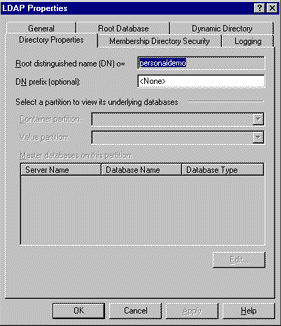
Figure 16. Finding the "o=" value from the LDAP dialog box
- Next, select the Script password variable so that the name and value appear in the text boxes.
- Change the value so that it uses the administrator password that you wrote down above.
- Change the Script ID value to read o=PersonalDemo. Close the dialog box by clicking the x in its upper right corner.
- Do the same for the pane with the Membership Header icon. You should now see your original HTML with a new section inserted.
In Visual Interdev 6.0, click the OK button to close the DTC.
Back to top
Add a cn Attribute
We've already performed several tasks where we skipped around the cn= attribute; cn stands for common name, and is used, unsurprisingly, to give names to objects in the Membership Directory. We'll add a cn membership attribute that will require visitors to enter their name, which will be stored as a unique entry in the membership database.
Insert the Membership.Attribute Design-time Control.
- Scroll through reg.asp to this comment:
<-- Insert Membership.Attribute : CN Here -->
- Insert the control as above. Position the cursor under the comment, right-click, and select Insert ActiveX control.
- Select the Design-time control tab and scroll down in the right pane to the Membership.Attribute DTC listing. Another dialog box will appear.
Activate the attribute-configuration dialog.
- Make sure that the Application Server box in the Attribute tab is pointed at the Editing site port, which in our case is localhost:5296. Do not use "localhost" without specifying a port, otherwise you'll be connected to the default Web root. If you're unsure about which port to enter, look at the port number in the left pane of the Visual InterDev display, which shows the Personal Demo workspace and the server connection.
- Once you've accessed the Editing site, click the Get Attributes button. A list of attributes will appear. You may get prompted to log on; use SiteEditor as a user name and the password that you've entered several times by now. (If you want to make sure you're accessing the right server, scroll down in the right pane until you see the PersonalProduct attribute you entered earlier.)
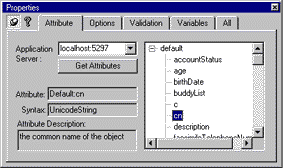
Figure 17. Selecting and assigning properties to attributes
Assign properties to the cn attribute.
- Select cn from the list of attributes. The Attribute, Syntax, and Attribute Description boxes will be filled.
- Click the Options tab. Select Username from the UI Type drop-down menu, and Update from the Action drop-down menu.
- Move to the Validation tab and check the check box next to Input Required. Close the Membership Attribute Design-time Control.
Back to top
Add a Password Attribute
The password attribute requires a user logging on to a page to enter a password of their choosing (subject to the constraints you set). It is very useful for services like personalization, because you can personalize even when users access your site from different machines (when cookies they were assigned in previous sessions are not available).
Insert the Membership.Attribute password Design-time Control.
- Scroll further down the reg.asp page until you see this comment:
<-- Insert Membership.Attribute : userPassword Here -->
- As above, position the cursor under the comment. Right-click and select Insert ActiveX control. From the dialog box that appears, select the Design-time control tab. Scroll down the list and highlight the Membership.Attribute DTC and click OK. This time, though, when the attribute list appears, select userPassword.
- Go to the Options tab again, and select Specify Password from the UI Type drop-down menu and Update from the Action drop-down menu.
- Go the Validation tab. The control will automatically select a form of password validation for you. In our case, it selected a text string input with a minimum of one character and a maximum of sixteen. Feel free to modify the password validation option to one that works best for you (we made the minimum password length four digits, just for grins). Close the Design-time Control.
Back to top
Add a Mail Attribute
Mail is a special entry field that can access information in Internet Explorer 4.0's Profile Assistant to prompt the registered e-mail name (if any) by default.
Insert Membership.Attribute mail Design-time Control.
- Scroll down reg.asp to this comment:
<-- Insert Membership.Attribute : mail Here -->
- Because we're dealing with another membership attribute, you should know the routine by now. Position the cursor under the comment. Right-click and select Insert ActiveX control. From the dialog box that appears, select the Design-time control tab. Scroll down the list and highlight the Membership.Attribute DTC and click OK. When the Membership Attribute dialog appears, select the mail attribute.
- In the Options tab, select Single Line Text as the UI Type and Update as the Action.
- Go to the Variables tab and select HTML inserted before the field, which should then appear under Variable Name.
- Type "Email Address:" in the Value text box. Close the Design-time Control as before by successively clicking the x in the upper right corner of the dialog box and the attribute display pane.
Back to top
Add a PersonalProduct Attribute
Now we get to insert the attribute we created into the Membership Directory Manager of the Management Console. This whole section, "Insert Design-time Controls...", refers to a set of processes that are substantially alike, which quickly becomes apparent if you follow along duplicating the steps -- except that we'll link directly to aspects of the site vocabulary.
Activate the Membership.Attribute PersonalProduct Design-time Control.
- Scroll through reg.asp until you find this comment:
<-- Insert Membership.Attribute : PersonalProduct Here -->
- Follow the steps to insert an ActiveX Design-time Control. When the Membership Attribute dialog box appears, select PersonalProduct from the Attribute tab.
- In the Options tab, select the Site Vocabulary List Box Single Select for the UI Type and Update for Action.
- You will not need to modify the Validation tab. You might want to explore it to see how the control will get information from the site vocabulary.
- Go to the Variables tab and select the HTML inserted before the field variable. Type Personal Product: into the Value text box. Close the Design-time Control.
Insert the Membership.Footer Design-time Control.
- Scroll through reg.asp to this comment:
<!--Insert Membership.Footer DTC here -->
- Select the Membership.Footer Design-time Control. Close the control (no modifications are necessary).
- Click the Save All button in the Visual InterDev toolbar, and you will be ready to preview the new registration page.
Add a Membership.Attribute to userpref.asp.
Finally, add one more Design-time Control to the userpref.asp page. This attribute presents a slightly different take on the PersonalProduct attribute we added to the reg.asp page. Instead of choosing Update for the Action, we'll choose DisplayUpdate.
Because the user has already indicated a preference in the registration page, the user-preference page should reflect that choice. DisplayUpdate presents the same drop-down menu, with the visitor's previous choice selected.
- To add the control, open userpref.asp and scroll to this comment:
<-- Insert Membership.Attribute : PersonalProduct Here -->
- Follow the directions for inserting the PersonalProduct attribute above, but use DisplayUpdate rather than Update. You have finished all of the modifications needed to implement a full user registration with Profile Assistant integration.
Back to top
View the Registration Page
- In Internet Explorer version 4.0 or later, view your page by entering the address "http://localhost:5295/personalization/" in the address box (note that you're entering the address of the Viewing site, not the Editing site).
- Follow the link to Register as a Member. If you have filled out the Profile Assistant information for Internet Explorer 4.0, you will first see a dialog box checking to see whether it's okay to insert the checked information in a list. (To configure the Profile Assistant in your own copy of Internet Explorer, open the View menu, select Internet Options, select the Content tab, and click the Edit Profile button.)
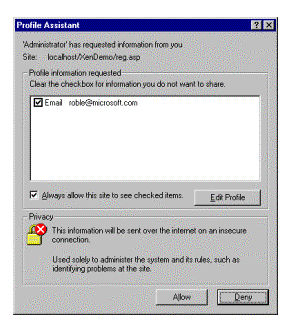
Figure 18. Internet Explorer Profile Assistant
- If you click the Allow button, you will see the full registration page:
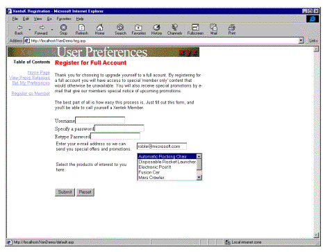
Figure 19. Complete Registration page
- You can easily modify the HTML formatting of the various Design-time Controls. As mentioned above, you can choose different settings in the Options and Validation tabs, or insert HTML text or formatting through the Variables tab or directly on the page (although you should avoid adding HTML within the code added by the Design-time Controls). For some interesting settings, you might refer to the sample registration pages in the Inspired Technologies Sample Site, which can be found in your Site Server documentation at Site Server Root\Sites\samples\knowledge\membership\inspired\reg.asp.
- If you type in a user name and password, the page will attempt to register you to the system. Note that this registration page already incorporates a great deal of error-checking. For example, if you type in a user name that is already in the database, the page will return an error and ask you to select another name. The text of this error message can also be modified by settings on the Variables tab of the control.
Back to top
Target Personalized Content
Now that we've enabled a mechanism for collecting data on preferences of users (the PersonalProduct attribute), we can start using it to change what the server displays to that user on subsequent visits. We will demonstrate two forms of personalization:
- Insert script accessing an Active User Object (AUO) to display the user object (user name).
- Use the Rule Builder and Format Ruleset Design-time Controls to retrieve news releases from the News data source.
A Simple Example: Adding AUO Script
AUO is an interface that provides access to member data sources from script. In the following example, we will use AUO to implement a simple personalization scheme, inserting a user's name to welcome them to a page.
Instantiate the Active User Object (AUO).
- Open the press.asp file in your Visual InterDev project. Scroll down until you locate this comment:
<-- Instantiate AUO Here -->
- Place the cursor immediately below the comment, and type this line:
<% set user = server.createobject("Membership.UserObjects") %>
Fetch and print the user name.
- Next, scroll down the page until you find the string "username" in this line:
Welcome, <!-- Insert username script here -->, to your Press Releases
- Place this following statement immediately next to the username comment:
<%= user.cn %>
- Save the file. Preview it by clicking the View Press Releases link in the PersonalDemo site. The welcome line at the top of the page should now contain your user name.
Back to top
Create and Target a Content Source
Now we'll initiate a procedure that enables you to target custom content to the user. Our example will:
- Create a content source
- Write a rule to determine which content gets displayed
- Insert the rule into a Web page
The first thing we need to do is create an object that describes the content you wish to retrieve. In Site Server parlance, you are creating a metadata object called a content source. This object will choose between a set of content options based on input provided by the user (in our case, the PersonalProduct attribute). It is fairly easy to link to a content source using the HTML version of the Site Server Administration tool. The content source we'll access is an open database connectivity (ODBC) database source that already classifies itself by the product types listed in the site vocabulary.
Initiate the Membership Directory Manager.
- Start the HTML version of the Site Server Administration service. Select Membership Directory Manager from the home page. On the page that follows, log on to the membership server you created for this project by selecting PersonalDemo Membership Server from the drop-down list.
- Enter SiteEditor as the User name, and enter the password you gave earlier.
Activate the Content Source wizard.
- Select Content from the left navigation frame, and then the Content Sources hyperlink on the page that appears.
- A new page will appear that includes a Java applet that displays any previously created content sources, and three buttons labeled Create, Delete, and Properties. Select the Create button to activate the wizard.
Configure the Content Source.
- Type "News" as the name of the content source. Select the ODBC Database radio button, and select Next.
- Type "news" in the ODBC datasource box, and leave the remaining two blank. Select Next.
- Type "Documents" in the Tables text box. Leave the Join clause text box blank. A list of attributes will appear that specify different ODBC attributes in the news data source.
- Accept them all by selecting the Next button. With any luck, you should now see a summary screen similar to the one in Figure 20.
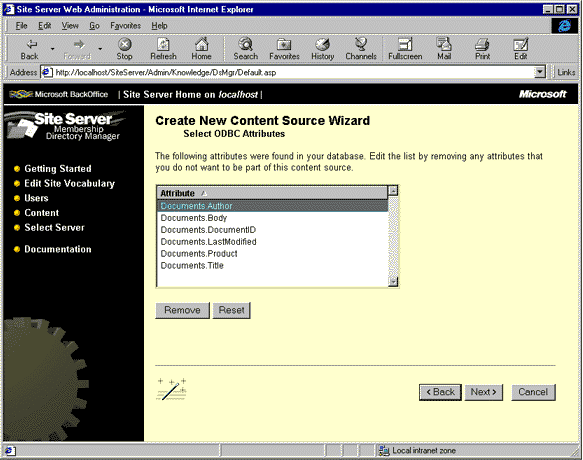
Figure 20. New Content Source wizard summary page
- Select Finish to process the content source. If you are successful, you will be bounced back to the original Content Source page, with your news content source added.
Verify the "news" ODBC provider.
Although we don't modify the ODBC provider, or the Microsoft Access database that it uses, you may wish to explore each to get a sense of how they work or look. The ODBC data source name (DSN) may be accessed from the ODBC item in the Control Panel. Select Start, Settings, Control Panel, and then double-click the ODBC icon. The Microsoft Access database may be found in the Site Server documentation at Site Server Root\Sites\samples\knowledge\membership\inspired\database\content.mdb.
Back to top
Create a Targeting Rule
Now that we have a content source, we can configure it to conditionally display the content it contains. The condition trigger will be the option the visitor selected when asked about which products interest him or her. We'll use the Site Server Rule Manager to set the condition(s), and create a file that we can incorporate into the press.asp file using Visual InterDev.
Activate and set up Rule Manager.
- From Start, select Programs, Microsoft Site Server, Tools, and Rule Manager. A two-pane dialog box will appear.
- From the Rules menu, select Add New Rule (or simply select the Add New Rule icon).
- You will be prompted with a log-on dialog box; click OK to log on anonymously (make sure the Server box refers to the appropriate server, which in our case is BEASTIEBOY:1003). You should see something like the following:
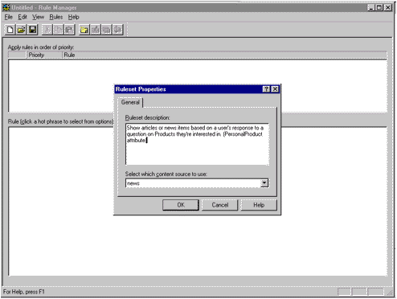
Figure 21. Introductory Rule Manager screen
Activate the Rule Builder.
- The first dialog box asks for a description of the rule you are building. Type in something like "Show articles or news items based on a user's response to a question or their product interests."
- Make sure the content source displayed in the drop-down box under Select the News Content Source reads news, and click OK.
Build a rule.
- You will now be presented with a Rule Builder dialog box. Click the Conditions tab and select Where user property has been set.
- Now click the Add button, and watch that option appear in the bottom pane of the rule builder. Click user property in the lower pane, and scroll down the dialog box that appears to the PersonalProduct attribute we added. Click OK.
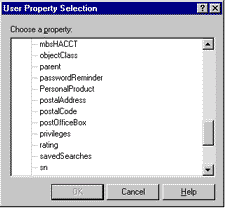
Figure 22. User Property Selection dialog box
- In the Content tab of the Rule Builder, select where content property contains user property from the list in the top pane of the box.
- Select the And Selection button, which will cause the lower plane to display the following message:
- Content property refers to an attribute we will select from our content source, and user property refers to an attribute that applies to the visitor. Double-click content property.
- The list of content attributes we included when setting up the content source will appear. Select the Product attribute and click OK.
- Now click the user property. A dialog box similar to that for the content property will appear, except that its possible values come from the list of attributes applicable to the site user.
- Scroll down the list and select the PersonalProduct attribute. Select it and click OK. You should now see a screen that looks something like Figure 23.
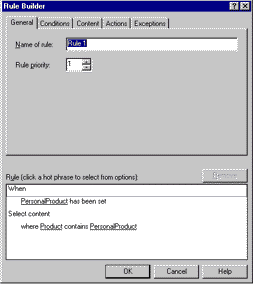
Figure 23. Rule Builder screen showing first rule
Pretty cool, eh? Now, whenever a user who has indicated a product preference accesses a page that installs this rule, they will get served some information on that product. But what about those visitors who don't go to the trouble of registering? Because we want to give them product information, too, we'll install another rule that will serve something up for them.
Add the backup rule.
- From the Rule Manager (which we returned to after selecting OK from the final Rule Builder dialog), select Add New Rule again.
- The Rule Builder will appear, this time with a default prompt of Rule 2. Note the Rule priority box immediately underneath, which has been set to 1. Change the priority to 2. We're assigning this rule a lower priority than the previous rule because we want it to occur only when users haven't registered.
- Navigate to the Content tab of the Rule Builder, and select content property is exactly equal to string.
- Select the And Selection button again to send it to the lower pane.
- Double-click content property and select the Product attribute again.
- Click the string phrase, type "Default" in the box provided, and click OK. Click OK to close the Rule Builder.
Save the ruleset.
- Save the ruleset by selecting Save from the File menu item.
- Name the file something meaningful (such as "selectProduct.prf") and save to a directory where you can easily find it later.
Back to top
Insert the Rule into a Web Page
The rule we've just created isn't any good off on its lonesome. To make it accessible within a Web page, we'll reference it using another Design-time Control in Visual InterDev.
Add the ruleset to your Visual InterDev project.
- From the Visual InterDev Project menu, select Add to Project and then Files.
- In the File Open dialog box, navigate to the PRF file you just saved in the Rule Manager. Remember to set the Files of type box to All Files (*.*). Select selectProduct.prf and click OK.
Insert the ruleset into a page.
- Now we'll simply insert the rules embedded in our PRF file into a Design-time Control. Activate the press.asp file by double-clicking it.
- Scroll down the file to this comment:
<!-- Insert Membership.FormatRuleset here -->
- Place the cursor immediately after the comment, right-click and select Insert ActiveX control. Navigate to the Design-time Control tab and select the Membership.FormatRuleset DTC.
- Choose the Display all options radio button, and close the dialog box.
- Another dialog box will appear in the Visual InterDev right pane.
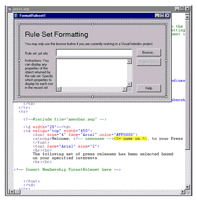
Figure 24. Rule Set formatting dialog in Visual InterDev
- Click the Browse button and navigate to where the file created by the Rule Manager (selectProduct.prf) is stored in Visual InterDev. It should appear immediately in the default directory: c:\Program files\DevStudio\MyProjects\personalization\.
- After the path to the rule file appears in the box, click OK.
Insert the HTML and ASP code.
- Click the Insert Field button. (You may be prompted with a log-on dialog box again, so just log on again.) You will be presented with another dialog box of the news content source.
- Select the Title attribute and click OK. This will insert code that retrieves the title for a press release. Include some formatting tags around the ASP code to offset it on the page (we added bold tags and a line break):
<b><%= MemRecordSet("Title")%></b><br>
- Follow the same steps to insert the Body attribute into the display. Insert two line breaks after the ASP generated by the Insert Fields command to separate articles on the page:
<%= MemRecordSet("Body") %><br><br>
- Close the Design-time Control dialog box, and save the press.asp file. You will return to the press.asp page, which will now show more fun code that processes and formats the conditional display.
View the press releases.
- Take a look at your handiwork! Go to the PersonalDemo site and click View Press Releases. You may be required to log on as the user that you created using the registration page. You should see a welcome banner that shows your name, as well as a list of press releases, if available, that correspond to the product you chose when you registered.
- You may change your selected product by clicking the Set My Preferences link, selecting a different product, and clicking Submit.
Back to top
Troubleshooting Guide
Conclusion
As you have hopefully surmised by now, personalization can be a powerful tool, although not trivial to implement. As we mentioned in the introduction, a successful personalization scheme collects (or even better, infers) information on the preferences of site visitors and, using that information, provides additional pages, applications, news, products, or resources that the visitor may not find on their own. That last point is particularly important. Certainly, personalization at the level we've described is overkill if the visitor already goes to the same information the personalization scheme reveals.
For a commerce site, the potential benefit is obvious: Visitors might buy more products. (In a similar vein, if personalization can ease the purchase process, especially by eliminating the need for a visitor to re-enter information, visitors have one less obstacle to purchasing.) Other sites benefit as well, because personalization offers the ability to select individuals, like-minded groups, or even visitors that arrive from specific destinations (an ad on another site, for example), track them, and give them a richer experience of your site.
To succeed, a personalization scheme needs to be fully integrated with your site. The samples we provided demonstrate the value of linking personalization to a site vocabulary. If your content extends from a well-classified vocabulary, personalizing it is much easier. Maintaining a site vocabulary enforces a worthwhile design discipline that a personalization scheme can take advantage of, and makes for a more cohesive user experience of your site.
I hope we've given you enough information to start experimenting with your own personalization ideas. We've only scratched the surface of what personalization can deliver, and would like to hear your ideas of where to go from here.